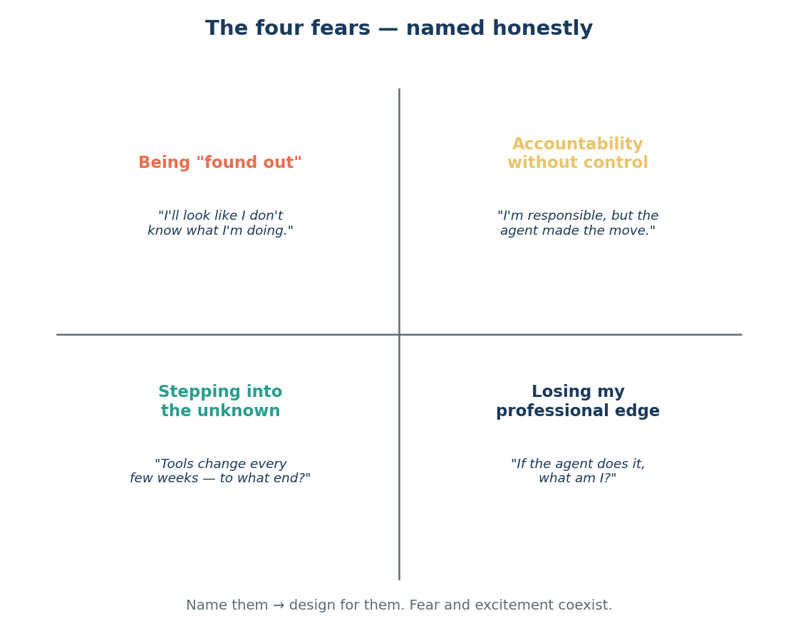
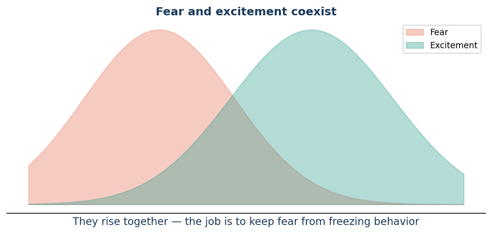

Issue 8 — The four fears agentic AI stirs — named honestly
Edisi 8 — Empat rasa takut yang dibangkitkan agentic AI — diucapkan dengan jujur
This issue is different, and it's meant for managers and their teams both. So far we've shown what agents can do. Now let's talk about how they make us feel — because if we don't name the fears, they'll run the show from the shadows. McKinsey, studying why AI adoption stalls, found the blockers are rarely technical. They're human, and they cluster into four fears (Figure 8.1).
Edisi ini beda, dan ditujukan buat manajer maupun timnya sekaligus. Sejauh ini kita udah nunjukkin apa yang bisa dikerjakan agent. Sekarang, yuk ngomongin gimana perasaan kita soal itu — karena kalau rasa takutnya nggak kita sebut namanya, dia yang bakal diam-diam ngatur jalannya cerita. McKinsey, yang meneliti kenapa adopsi AI suka mandek, menemukan bahwa penghambatnya jarang soal teknis. Itu soal manusia, dan mengelompok jadi empat rasa takut (Gambar 8.1).

The first is being found out. "If I need an agent to do this, does it mean I couldn't?" Many of us quietly worry that using the tool exposes a gap. It doesn't — but the fear is real, and pretending it isn't only drives it underground.
Yang pertama adalah takut ketahuan. "Kalau aku butuh agent buat ngerjain ini, apa artinya aku nggak bisa?" Banyak dari kita diam-diam khawatir kalau pakai tools ini malah membongkar kekurangan kita. Padahal enggak — tapi rasa takutnya nyata, dan berpura-pura nggak ada malah bikin dia makin sembunyi.
The second is accountability without control. "I'm responsible for the outcome, but the agent made the move." We've spent all of Issue 7 answering this one — the dial, the gate, the badge — precisely because it's the fear that most deserves a concrete design answer.
Yang kedua adalah akuntabilitas tanpa kendali. "Aku yang tanggung jawab atas hasilnya, tapi agent yang bertindak." Kita habiskan seluruh Edisi 7 buat menjawab yang ini — dial, gerbang, lencana — justru karena ini rasa takut yang paling pantas dapat jawaban desain yang konkret.
The third is stepping into the unknown. "The tools change every few weeks. Where does this even end?" This one is honest and unanswerable in the old way, because there is no fixed end-state to point to. That's not a comfortable thing for a manager to admit, but admitting it is the start of leading through it.
Yang ketiga adalah melangkah ke wilayah yang belum diketahui. "Tools-nya berubah tiap beberapa minggu. Ini sebenarnya bakal berhenti di mana?" Yang ini jujur, dan nggak bisa dijawab dengan cara lama, karena memang nggak ada end-state pasti yang bisa ditunjuk. Bukan hal yang nyaman buat diakui seorang manajer, tapi mengakuinya justru awal dari memimpin lewatnya.
The fourth is losing your professional edge. "If the agent does the work, what am I?" This is the deepest one, because it's about identity, not tasks. It deserves a real answer, and the rest of this series is largely about giving one.
Yang keempat adalah kehilangan keunggulan profesional. "Kalau agent yang mengerjakan, aku ini apa?" Ini yang paling dalam, karena soal identitas, bukan sekadar tugas. Ini pantas dapat jawaban yang beneran, dan sebagian besar seri ini sebenarnya soal memberikan jawaban itu.
Here's the thing to hold onto: fear and excitement coexist (Figure 8.2). You can be genuinely excited about a self-triaging worklist and genuinely uneasy about what it means for you — at the same time. That's not confusion; that's being a thoughtful person in a real change. The job — for all of us, managers most of all — isn't to make the fear disappear. It's to keep the fear from freezing us into doing nothing.
Ini yang perlu dipegang: rasa takut dan semangat bisa hidup berdampingan (Gambar 8.2). Kamu bisa beneran senang sama worklist yang bisa triase sendiri, sekaligus beneran nggak nyaman soal apa artinya itu buat kamu — di saat yang sama. Itu bukan kebingungan; itu tanda kamu orang yang mikir dalam perubahan yang nyata. Tugas kita semua — apalagi para manajer — bukan menghilangkan rasa takutnya. Tapi menjaga supaya rasa takut itu nggak bikin kita diam saja.

None of these fears is a weakness. They're signals worth designing for, and naming them is how we start. This is a reinvention of how our work gets done, and reinvention is unsettling by nature.
Nggak satu pun dari rasa takut ini adalah kelemahan. Semuanya sinyal yang layak kita rancang solusinya, dan menyebut namanya adalah cara kita mulai. Ini reinvention soal cara kerja kita, dan reinvention itu memang secara alami bikin nggak nyaman.
Sources
Sumber
- McKinsey, "How to close the agentic adoption gap" (Aug 7, 2026) — four fears; fear and excitement coexist.
- McKinsey, "How to close the agentic adoption gap" (7 Agustus 2026) — empat rasa takut; rasa takut dan semangat berjalan bersamaan.